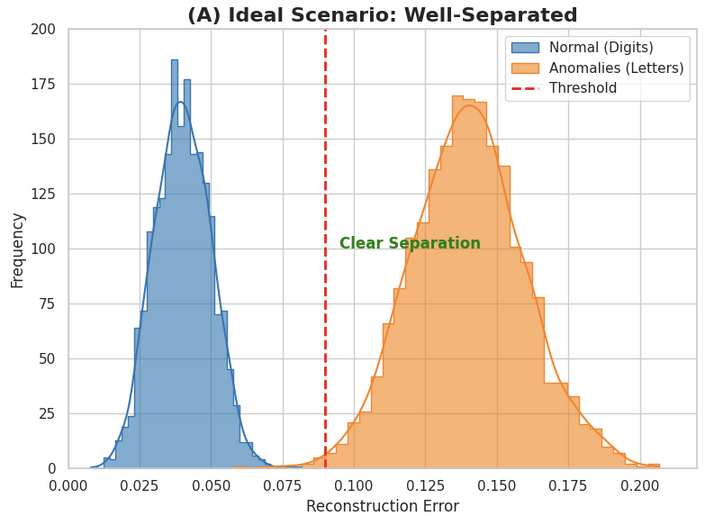
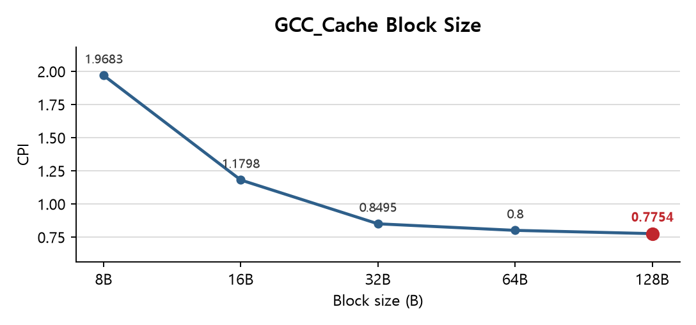

DATA PIPELINE &
SYSTEM OPTIMIZATION
ENGINEER
SYSTEM OPTIMIZATION
ENGINEER
유지원 (Yu Jiwon)
검색 엔진, 병렬 처리 구조, 생성형 AI, 임베디드 시스템까지 직접 구현하고 수치로 검증해온 결과를 정리했습니다.
모든 프로젝트는 원본 보고서와 발표자료로 바로 확인할 수 있습니다.
7개 프로젝트·2회 수상·숭실대학교 전자정보공학부 IT융합전공
About
검색 엔진, 운영체제 병렬 처리, 생성형 AI, 임베디드 시스템 등 서로 다른 레이어의 프로젝트를 직접 설계하고 구현해왔습니다.
그 과정에서 왜 이 방식을 선택했는가와 결과를 어떻게 수치로 증명할 수 있는가를 가장 중요하게 생각합니다.
Experience
2025 SSU DATATHON — 우수상
FAISS 기반 의미론적 검색 엔진 모델 구축
2025 한이음 드림업 프로젝트 — 장려상 (과학기술정보통신부 주최)
생성형 이미지 AI 기반 결함 데이터 증강 시스템
2026 SKT ALEPH 1기 이수 중
정보처리기사 — 필기 합격, 실기 준비 중
숭실대학교 전자정보공학부 IT융합전공
7학기 이수 후 휴학
Projects

의미론적 검색 엔진 모델 구축 — 4bit Pathfinder
62,199건 논문 데이터의 키워드 결측치를 복구해, FAISS 기반 연구자·기관 추천 엔진을 만들었습니다.

한이음 드림업: 결함 데이터 증강 시스템
Stable Diffusion·ControlNet으로 제조 결함 이미지를 생성해, 학습 데이터 부족 문제를 해결했습니다.

CPU-bound Monte Carlo 병렬 처리 구조 성능 분석
5가지 병렬 처리 구조를 직접 구현해, 워커 수와 실행 효율의 관계를 수치로 입증했습니다.

Autoencoder 기반 이상 탐지 모델 하이퍼파라미터 최적화
심각한 과적합의 원인을 하이퍼파라미터별로 실험해, Test Accuracy를 81%까지 끌어올렸습니다.

ARM 코드 최적화 및 이미지 변환 시스템 구현
ARM 어셈블리로 이미지 색 반전 연산을 구현하고, 링커 충돌 문제를 직접 분석해 해결했습니다.

Computer Architecture: 프로세서·캐시 구성 성능 분석
SimpleScalar로 프로세서·캐시 구성을 바꿔가며, 4개 벤치마크로 성능 변화를 정량 분석했습니다.

Reconfigurable FIR Filter 설계
21-tap 재구성형 FIR 필터를 Verilog로 설계해, 계수 변경 중 파형이 깨지는 문제를 해결했습니다.
Tech Stack
Languages
PythonCARM AssemblyVerilog HDL
AI & Data
PyTorchFAISSko-sroberta-multitaskStable DiffusionControlNetLoRA
Systems & Embedded
LinuxPOSIX pthreadKeil MDKFPGASimpleScalar
Web & Infra
DjangoAWS S3AWS RDSStreamlit